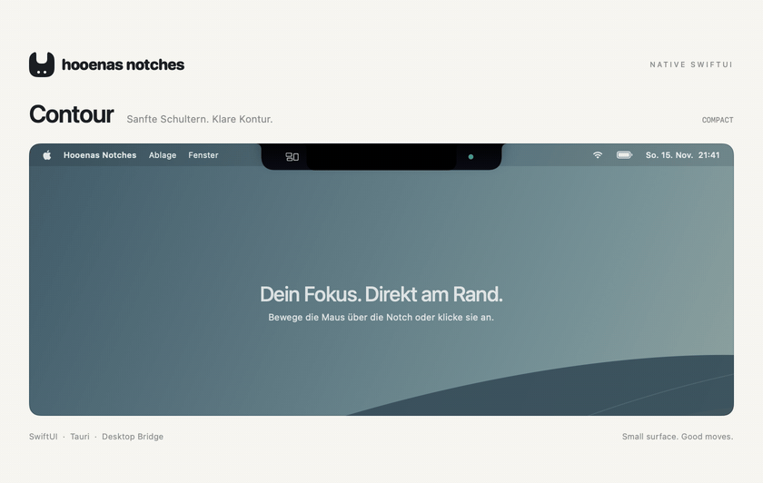

Kleine Fläche. Gute Momente.
Dein Platz
am Bildschirmrand.
Hooenas Notches ist eine native macOS-Utility für Fokus, Schnellnotizen und Uhr. Das SDK stellt dieselben animierten SwiftUI- und AppKit-Komponenten für eigene Anwendungen bereit.
Die Utility
Fokus-Timer, lokale Notizen und Uhr in Contour, Capsule oder Glass. Die App wird für den Mac App Store vorbereitet und ist noch nicht im Store verfügbar.
Das SDK
SwiftUI, ein nativer JSON-Lines-Host und eine Tauri-/TypeScript-Integration. Quellcode und Installation.
FSL-1.1-MIT mit vollständigen Herkunfts- und Lizenzhinweisen.
Contour
SDK-Beispiel mit eigenen Kurven und Federwerten.
